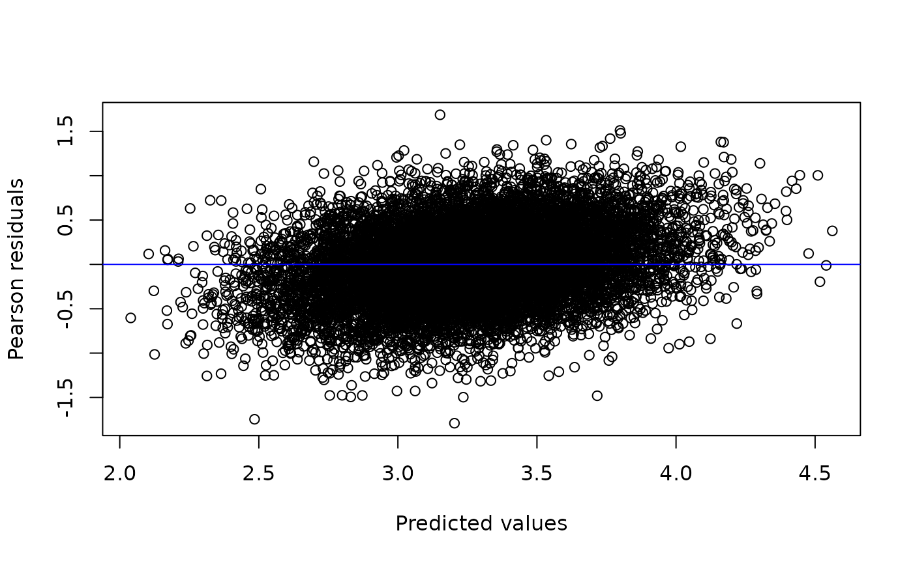

This vignette describes how galamm can be used to
estimate linear mixed models with factor structures. Such models are an
instance of the generalized linear latent and mixed models (GLLAMM)
framework described by Rabe-Hesketh, Skrondal,
and Pickles (2004) and Skrondal and Rabe-Hesketh (2004). The R package PLmixed (Rockwood and Jeon 2019) estimates such
models using a profile likelihood algorithm initially proposed by Jeon and Rabe-Hesketh (2012). The models are also a special
case of generalized additive latent and mixed models (GALAMM), and in
galamm these models are estimated using a more direct algorithm
described in Sørensen, Fjell, and Walhovd (2023).
The examples used in this vignette come from the simulated datasets provided by PLmixed (Rockwood and Jeon 2019). The purpose of this vignette is to confirm that galamm gives the same results for these models, and to introduce the syntax. As will be clear if you run the code, galamm can often be considerably faster.
Crossed Random Effects Model with Persistence Parameters
This example comes from Section 3.1 in Jeon
and Rabe-Hesketh (2012), whose model was again based on
McCaffrey et al. (2004). The dataset KYPSsim
comes from PLmixed and is a
simulated version of the Korea Youth Panel Survey (KYPS) data.
head(KYPSsim)
#> mid hid sid time esteem
#> 1 1 1 1 1 2.759234
#> 2 1 1 1 2 2.980368
#> 3 1 1 1 3 3.130784
#> 4 1 1 1 4 3.310306
#> 5 2 1 2 1 2.924520
#> 6 2 1 2 2 2.997440Student self esteem (variable esteem) was assessed at
four timepoints, the first two while the student attended middle school,
and the second two while the student attended high school. The variables
mid and hid represent the middle school and
high school which a given student attended, and sid is the
student identifier. The variable time indicates the given
timepoint.
We will use a discrete time model, and hence convert the time variable to a factor.
Since students attending a given middle school not necessarily attend the same high school, we have a model with crossed random effects. We use the model of Jeon and Rabe-Hesketh (2012), whose measurement part can be formulated as
\[ y_{tsmh} = \beta_{0} + \sum_{t'=2}^{4} d_{tt'}\beta_{t'} + \mathbf{d}_{t}^{T} \left(\boldsymbol{\lambda}_{m} \eta_{m} + \boldsymbol{\lambda}_{h} \eta_{h}\right) + \eta_{s} + \epsilon_{tsmh}, \]
where \(\mathbf{d}_{t} = (d_{t1},d_{t2},d_{t3},d_{t4})^{T}\) is a vector whose \(t\)th element equals one and all other elements equal zero. \(\beta_{0}\) is an intercept, and \(\beta_{2}\), \(\beta_{3}\), and \(\beta_{4}\) are the effects of timepoints 2, 3, and 4. \(\eta_{m}\) and \(\eta_{h}\) are the “teacher effects” of middle school \(m\) and high school \(s\), respectively, \(\eta_{s}\) is the latent level for student \(s\), and \(\epsilon_{tsmh}\) is a residual term. \(\boldsymbol{\lambda}_{m}\) and \(\boldsymbol{\lambda}_{h}\) are factor loadings (called “persistence parameters” by McCaffrey et al. (2004) and Jeon and Rabe-Hesketh (2012)) specifying how the teacher effects for middle school and high school impact the self esteem measurement. Since students attend high school after middle school, the measurements of self esteem in middle school are assumed not to be affected by high school, and hence the first two elements of \(\boldsymbol{\lambda}_{h}\) are set to zero. The first nonzero element is set to zero for identifiability, so we have \(\boldsymbol{\lambda}_{h} = (0, 0, 1, \lambda_{h4})^{T}\). Conversely, we allow for middle school to have an effect of measurements in high school, so \(\boldsymbol{\lambda}_{m} = (1, \lambda_{m2}, \lambda_{m3}, \lambda_{m4})^{T}\), with the first element set to zero for identifiability. The residuals are assumed normally distributed, \(\epsilon_{tsmh} \sim N(0, \phi)\).
Written out for each of the four timepoints, the model becomes
\[ \begin{aligned} y_{1smh} &= \beta_{0} + \eta_{m} + \eta_{s} + \epsilon_{1smh} \\ y_{2smh} &= \beta_{0} + \beta_{2} + \lambda_{m2} \eta_{m} + \eta_{s} + \epsilon_{2smh} \\ y_{3smh} &= \beta_{0} + \beta_{3} + \lambda_{m3} \eta_{m} + \eta_{h} + \eta_{s} + \epsilon_{3smh} \\ y_{4smh} &= \beta_{0} + \beta_{4} + \lambda_{m4} \eta_{m} + \lambda_{h4} \eta_{h} + \eta_{s} + \epsilon_{4smh} \end{aligned} \]
The structural model is simply
\[ \begin{pmatrix} \eta_{m} \\ \eta_{h} \\ \eta_{s} \end{pmatrix} = \begin{pmatrix} \zeta_{m} \\ \zeta_{h} \\ \zeta_{s} \end{pmatrix} \sim N_{3}\left(\mathbf{0}, \begin{bmatrix} \psi_{m} & 0 & 0 \\ 0 & \psi_{h} & 0 \\ 0 & 0 & \psi_{s} \end{bmatrix} \right), \]
where \(N_{3}(a, b)\) denotes a trivariate normal distribution with mean \(a\) and covariance \(b\).
In order to fit the model with galamm, we use the same syntax as
PLmixed, and start by defining the loading matrix. The first column
contains \(\boldsymbol{\lambda}_{m}\)
and the second column contains \(\boldsymbol{\lambda}_{h}\). Numerical
values in this matrix means that the entry is fixed to the given value,
whereas NA means that the value is unknown, and should be
estimated. We enclose the matrix in a list, because potentially there
can be multiple matrices, and then each should be a list element.
(loading_matrix <- list(rbind(
c(1, 0),
c(NA, 0),
c(NA, 1),
c(NA, NA)
)))
#> [[1]]
#> [,1] [,2]
#> [1,] 1 0
#> [2,] NA 0
#> [3,] NA 1
#> [4,] NA NAWe connect the loading matrix to variables in the dataframe with the following list of factors. Since the list of loading matrices has only a single element, also the list of factors has only a single element, which is one character vector for each column in the loading matrix.
Finally, we define the loading variable. This is a variable
connecting rows of the dataframe to rows of the loading matrices. In
this case, for each value of time, the corresponding row of
the loading matrix should be multiplied by the latent variables \(\eta_{m}\) and \(\eta_{h}\), so we set it as follows:
load.var <- "time"The model formula is specified as
form <- esteem ~ time + (0 + ms | mid) + (0 + hs | hid) + (1 | sid)We use lme4 syntax for random effects. For example, the term
(0 + ms | mid) corresponds to \(\lambda_{mt}\eta_{m}\), where
| mid specifies that \(\eta_{m}\) should have a unique value for
each unique mid. Since "ms" can be found in
the factors defined above, this term should be treated
specially, by making sure that the latent variable is multiplied by the
factor loading corresponding to "ms" for each particular
row. In contrast, the latent variable for students \(\eta_{s}\) is a simple random intercept,
and hence the term (1 | sid) suffices.
We fit the model using galamm with the following
call.
mod <- galamm(
formula = form,
data = KYPSsim,
factor = factors,
load.var = load.var,
lambda = loading_matrix
)The model could be fit with PLmixed using the following
call with exactly the same arguments as to galamm. The
reader is encouraged to try, and confirm that the results are
essentially equivalent, but we won’t run it in this vignette as it takes
5-10 minutes.
kyps_plmixed <- PLmixed(
formula = form,
data = KYPSsim,
factor = factors,
load.var = load.var,
lambda = loading_matrix
)Using galamm’s summary method, we can study the model output.
summary(mod)
#> Generalized additive latent and mixed model fit by maximum marginal likelihood.
#> Formula: form
#> Data: KYPSsim
#>
#> AIC BIC logLik deviance df.resid
#> 19388.0 19476.2 -9682.0 19364.0 11482
#>
#> Scaled residuals:
#> Min 1Q Median 3Q Max
#> -3.7952 -0.5945 0.0028 0.6049 3.5753
#>
#> Lambda:
#> ms SE hs SE
#> lambda1 1.00000 . . .
#> lambda2 0.87509 0.1421 . .
#> lambda3 0.04432 0.1496 1.000 .
#> lambda4 0.02094 0.1543 1.502 0.504
#>
#> Random effects:
#> Groups Name Variance Std.Dev.
#> sid (Intercept) 0.151749 0.38955
#> hid hs 0.005253 0.07248
#> mid ms 0.010695 0.10342
#> Residual 0.222511 0.47171
#> Number of obs: 11494, groups: sid, 2924; hid, 860; mid, 104
#>
#> Fixed effects:
#> Estimate Std. Error t value Pr(>|t|)
#> (Intercept) 3.1479 0.01524 206.619 0.000e+00
#> time2 0.1184 0.01253 9.451 3.361e-21
#> time3 0.1534 0.01607 9.547 1.339e-21
#> time4 0.1924 0.01675 11.489 1.496e-30We can look at the factor loadings specifically using the
factor_loadings function. Perhaps not surprisingly, middle
school teacher effects have a low impact on self esteem while the
student attends high school, as can be seen by the last two rows of the
“ms” column being very close to zero.
factor_loadings(mod)
#> ms SE hs SE
#> lambda1 1.00000000 NA 0.000000 NA
#> lambda2 0.87509310 0.1421073 0.000000 NA
#> lambda3 0.04431740 0.1495679 1.000000 NA
#> lambda4 0.02093663 0.1542824 1.501574 0.5040217A diagnostic plot of residuals versus predicted values also looks acceptable, although there seems to be a slight upward trend.
plot(mod)
We can also compare the estimated model to a model with constrained factor loadings. In particular, we could assume that the teacher effect in middle school has no effect on self esteem measured during high school, by setting the last two elements of \(\boldsymbol{\lambda}_{m}\) to zero. We would then have the following loading matrix.
(loading_matrix_constr1 <- list(rbind(
c(1, 0),
c(NA, 0),
c(0, 1),
c(0, NA)
)))
#> [[1]]
#> [,1] [,2]
#> [1,] 1 0
#> [2,] NA 0
#> [3,] 0 1
#> [4,] 0 NA
mod_constr1 <- galamm(
formula = form,
data = KYPSsim,
factor = factors,
load.var = load.var,
lambda = loading_matrix_constr1
)We could further assume that the factor loadings at timepoints 1 and 2 for middle school and at timepoints 3 and 4 for high schools are identical, which in practice would lead to a linear mixed model with no factors. One way of estimating this model is to define a new loading matrix:
(loading_matrix_constr2 <- list(rbind(
c(1, 0),
c(1, 0),
c(0, 1),
c(0, 1)
)))
#> [[1]]
#> [,1] [,2]
#> [1,] 1 0
#> [2,] 1 0
#> [3,] 0 1
#> [4,] 0 1
mod_constr2 <- galamm(
formula = form,
data = KYPSsim,
factor = factors,
load.var = load.var,
lambda = loading_matrix_constr2
)Equivalently, we could create dummy variables for the timepoints:
KYPSsim$time12 <- as.integer(KYPSsim$time %in% 1:2)
KYPSsim$time34 <- as.integer(KYPSsim$time %in% 3:4)
head(KYPSsim)
#> mid hid sid time esteem time12 time34
#> 1 1 1 1 1 2.759234 1 0
#> 2 1 1 1 2 2.980368 1 0
#> 3 1 1 1 3 3.130784 0 1
#> 4 1 1 1 4 3.310306 0 1
#> 5 2 1 2 1 2.924520 1 0
#> 6 2 1 2 2 2.997440 1 0We this formulation, we don’t need to specify the
factor, load.var, and lambda
arguments.
mod_constr2b <- galamm(
formula = esteem ~ time + (0 + time12 | mid) + (0 + time34 | hid) + (1 | sid),
data = KYPSsim
)We can compare all four models using the anova member
function. Reassuringly, the two ways of formulating the last model give
identical results. Furthermore, this simplest model seems to be
preferred over the two more complex models on this simulated
dataset.
anova(
mod, mod_constr1, mod_constr2,
mod_constr2b
)
#> Data: KYPSsim
#> Models:
#> mod_constr2: form
#> mod_constr2b: esteem ~ time + (0 + time12 | mid) + (0 + time34 | hid) + (1 | sid)
#> mod_constr1: form
#> mod: form
#> npar AIC BIC logLik deviance Chisq Df Pr(>Chisq)
#> mod_constr2 8 19394 19452 -9688.9 19378
#> mod_constr2b 8 19394 19452 -9688.9 19378 0.0000 0
#> mod_constr1 10 19397 19471 -9688.5 19377 0.6661 2 0.716735
#> mod 12 19388 19476 -9682.0 19364 13.1070 2 0.001425 **
#> ---
#> Signif. codes: 0 '***' 0.001 '**' 0.01 '*' 0.05 '.' 0.1 ' ' 1Multi-Trait Multi-Rater Model
We next consider a model based on example 1 in Rockwood and Jeon (2019), which uses the dataset
JUDGEsim in PLmixed, which is
simulated to mimic the data used by Koch et al.
(2016). We refer to Rockwood and Jeon (2019) for all the details, and merely
present the model and how to estimate it using galamm.
The data contains ratings of two traits in students, and the traits are rated by both students and teachers.
Initially, we need to convert the item variable to a factor.
JUDGEsim$item <- factor(JUDGEsim$item)The first ten rows of the dataset are as follows:
head(JUDGEsim, 10)
#> item method trait stu class tch response
#> 1 1 1 1 1 1 1 2.509475
#> 2 1 1 1 1 1 2 3.246730
#> 3 1 1 1 1 1 3 2.846695
#> 4 1 1 1 1 1 4 2.290954
#> 5 1 1 1 1 1 5 2.794368
#> 6 1 1 1 1 1 6 2.849511
#> 7 1 1 1 1 1 7 2.255039
#> 8 1 1 1 2 1 1 2.676437
#> 9 1 1 1 2 1 2 2.923184
#> 10 1 1 1 2 1 3 2.778979The grouping factors in the data are class (variable
class), student (variable stu) and teacher
(variable tch). The teachers’ ratings of the first trait is
given by items 1-3, and the students’ rating of the same trait is given
by items 7-9. For the second trait, the items are 4-6 and 10-12,
respectively. Looking at the frequency table, we see that there are more
observations of items 1-6. This happens because a single teacher would
in general rate more than one student, whereas a single student would
only rate themselves.
table(JUDGEsim$item)
#>
#> 1 2 3 4 5 6 7 8 9 10 11 12
#> 7828 7828 7828 7828 7828 7828 1249 1249 1249 1249 1249 1249In matrix-vector format, the measurement model is (equation 16 in Rockwood and Jeon (2019))
\[ \begin{pmatrix} y_{1tsc} \\ \vdots \\ y_{12tsc} \\ \end{pmatrix} = \begin{pmatrix} \beta_{1} \\ \vdots \\ \beta_{12} \end{pmatrix} + \begin{pmatrix} 1 & 0 & 1 & 0 & 0 & 0 & 1\\ \lambda_{21} & 0 & \lambda_{23} & 0 & 0 & 0 & 1 \\ \lambda_{31} & 0 & \lambda_{33} & 0 & 0 & 0 & 1\\ 0 & 1 & 0 & 1 & 0 & 0 & 1 \\ 0 & \lambda_{52} & 0 & \lambda_{54} & 0 & 0 & 1 \\ 0 & \lambda_{62} & 0 & \lambda_{64} & 0 & 0 & 1 \\ 0 & 0 & 0 & 0 & 1 & 0 & 1 \\ 0 & 0 & 0 & 0 & \lambda_{85} & 0 & 1 \\ 0 & 0 & 0 & 0 & \lambda_{95} & 0 & 1 \\ 0 & 0 & 0 & 0 & 0 & 1 & 1 \\ 0 & 0 & 0 & 0 & 0 & \lambda_{11,6} & 1 \\ 0 & 0 & 0 & 0 & 0 & \lambda_{12,6} & 1 \\ \end{pmatrix} \begin{pmatrix} \eta_{1t}^{(t)} \\ \eta_{2t}^{(t)} \\ \eta_{3s}^{(s)} \\ \eta_{4s}^{(s)} \\ \eta_{5s}^{(s)} \\ \eta_{6s}^{(s)} \\ \eta_{7c}^{(c)} \\ \end{pmatrix} + \boldsymbol{\epsilon}_{tsc} \]
In brief, \(\eta_{1t}^{(t)}\) and \(\eta_{2t}^{(t)}\) are the teacher effects, \(\eta_{3s}^{(s)}\) and \(\eta_{4s}^{(s)}\) are teacher’s perception of the students on the trait, \(\eta_{5s}^{(s)}\) and \(\eta_{6s}^{(s)}\) are the students’ perception of themselves on the trait, and \(\eta_{7c}^{(c)}\) is the classroom effect. The factor loadings are the “regression coefficients” for regressing the observed items onto these latent traits. The subscripts \(t\), \(s\), and \(c\) indicate teacher, student, and class, respectively.
The structural model is simply
\[ \begin{pmatrix} \eta_{1t}^{(t)} \\ \eta_{2t}^{(t)} \\ \eta_{3s}^{(s)} \\ \eta_{4s}^{(s)} \\ \eta_{5s}^{(s)} \\ \eta_{6s}^{(s)} \\ \eta_{7c}^{(c)} \\ \end{pmatrix} = \begin{pmatrix} \zeta_{1t}^{(t)} \\ \zeta_{2t}^{(t)} \\ \zeta_{3s}^{(s)} \\ \zeta_{4s}^{(s)} \\ \zeta_{5s}^{(s)} \\ \zeta_{6s}^{(s)} \\ \zeta_{7c}^{(c)} \\ \end{pmatrix} \]
where
\[ \begin{pmatrix} \zeta_{1t}^{(t)} \\ \zeta_{2t}^{(t)} \\ \end{pmatrix} \sim N_{2}(\mathbf{0}, \boldsymbol{\Psi}^{(t)}), \]
\[ \begin{pmatrix} \zeta_{3s}^{(s)} \\ \zeta_{4s}^{(s)} \\ \zeta_{5s}^{(s)} \\ \zeta_{6s}^{(s)} \\ \end{pmatrix} \sim N_{4}(\mathbf{0}, \boldsymbol{\Psi}^{(s)}), \]
\[ \begin{pmatrix} \zeta_{7c}^{(c)} \\ \end{pmatrix} \sim N_{1}(0, \psi^{(c)}), \]
and
\[ \epsilon_{tsc} \sim N_{1}(0, \phi). \]
We specify the loading matrix as follows. In comparison with the mathematical model formulation just above, note that we don’t need to add the last column of only ones, since this column contains no parameters to be estimated.
(loading_matrix <- list(rbind(
c(1, 0, 1, 0, 0, 0),
c(NA, 0, NA, 0, 0, 0),
c(NA, 0, NA, 0, 0, 0),
c(0, 1, 0, 1, 0, 0),
c(0, NA, 0, NA, 0, 0),
c(0, NA, 0, NA, 0, 0),
c(0, 0, 0, 0, 1, 0),
c(0, 0, 0, 0, NA, 0),
c(0, 0, 0, 0, NA, 0),
c(0, 0, 0, 0, 0, 1),
c(0, 0, 0, 0, 0, NA),
c(0, 0, 0, 0, 0, NA)
)))
#> [[1]]
#> [,1] [,2] [,3] [,4] [,5] [,6]
#> [1,] 1 0 1 0 0 0
#> [2,] NA 0 NA 0 0 0
#> [3,] NA 0 NA 0 0 0
#> [4,] 0 1 0 1 0 0
#> [5,] 0 NA 0 NA 0 0
#> [6,] 0 NA 0 NA 0 0
#> [7,] 0 0 0 0 1 0
#> [8,] 0 0 0 0 NA 0
#> [9,] 0 0 0 0 NA 0
#> [10,] 0 0 0 0 0 1
#> [11,] 0 0 0 0 0 NA
#> [12,] 0 0 0 0 0 NANext, we specify the factors in the order they appear in the columns of the loading matrix. We can choose whichever names we like for the factors, except for names of existing variables in the dataset, but we must make sure they match the names used in the formula.
The formula is defined as follows, where have have placed the terms in the same order as they appear in the mathematical model in matrix-vector form specified above.
form <- response ~ 0 + item + (0 + teacher1 + teacher2 | tch) +
(0 + trait1.t + trait2.t + trait1.s + trait2.s | stu) +
(1 | class)Using PLmixed, we could have estimated the model as
follows, and doing it would confirm that the results are the same as
with galamm.
judge_plmixed <- PLmixed(
formula = form,
data = JUDGEsim,
lambda = list(loading_matrix),
load.var = "item",
factor = factors
)We get identical results using galamm in less than five
minutes. However, since five minutes is a bit too much for a vignette,
we won’t run it.
Model with a Product of Factor Loadings
Finally, in their Example 2, Rockwood and Jeon (2019) consider a model which contains products of factor loadings. At the moment, such a model cannot be estimated using galamm, although we will work on adding it in the future.